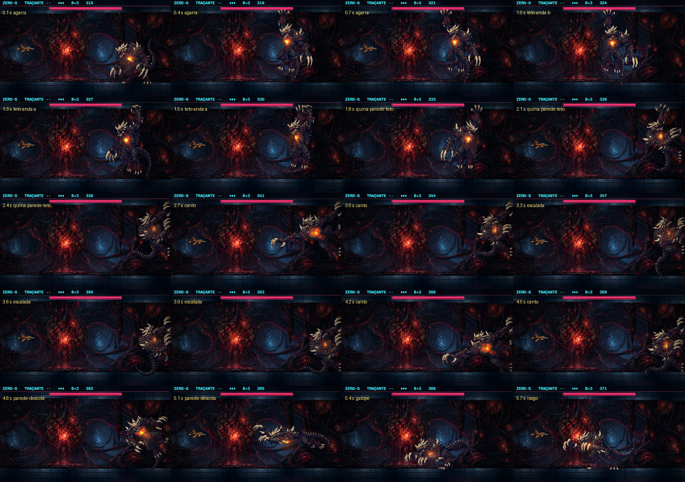

25/11. Spec 2026-11-24-besta-refeita-design.md §4.2; o plano está em plans/2026-11-25-besta-passo6-volta.md. Tudo foi filmado no jogo rodando (?fase=besta1&mao=nenhuma), no tempo real, com a nave parada e invulnerável. Nada aqui está aprovado.
25/11, a sua escolha (A): a primeira versão subia a parede da esquerda, atrás da nave, e você achou injusto ("a nave não vira o nariz para trás"). Agora ela nunca passa da metade da sala. Numa corrida só, ela:

São 5,4 s até o rasgo, mais 1,6 s do rasgo, perto dos ~6 s da spec. Cada número abaixo é um botão (VOLTA em src/entities/besta/volta.ts):
| Trecho | ms |
|---|---|
| Agarrar o teto | 850 |
| Teto (2 trocas de 340 ms) | 680 |
| Quina de cima à direita | 600 |
| Canto de cima à direita (250 parada + 650 golpe) | 900 |
| Descida | 560 |
| Canto de baixo à direita | 900 |
| Saída da parede + salto + pouso | 873 |
| Total até o rasgo | 5363 |
| O que fiz | Por quê | |
|---|---|---|
| 1. A chegada | No pé da parede da direita ela salta da parede (descola-a), pousa galopando e rasga no meio da arena. | Descer pela quina ao contrário a deixaria de quatro virada para a parede, de costas para a nave, e não há clipe de virar de quatro. O salto é curto: o clipe a ergue uns 55 px e o motor a traz de volta ao chão em 0,4 s. |
| 2. A virada no teto | No canto de cima ela troca de lado pendurada (um corte de um quadro: a pose pendurada espelhada). A garra que segura fica no mesmo lugar, e o motor leva os 38 px que faltam até a parede durante a quina. | A quina da direita é a quina-parede-teto espelhada, que começa na pendurada virada para a direita. |
| 3. A descida | É a escalada espelhada tocada ao contrário: ela desce de cabeça para cima, como o passo 3 previu. | Descer de cabeça para baixo pediria outra quina para chegar ao chão. |
| 4. Os dois cantos | O de cima e o de baixo da parede da direita. | A spec tinha três (dois na esquerda). Sem a parede da esquerda, a direita ganhou o canto de baixo. |
| 5. O teto curto | Duas trocas, de x≈244 até 322. | Cruzar o teto inteiro levava 2 s e passava por cima da nave. Se quiser mais teto, são 4 trocas a partir de x≈165, +0,7 s. |
node --experimental-transform-types scripts/test-besta-volta.mjs), saindo das duas âncoras do chão:
node scripts/_f4/_besta-volta.mjs), tudo certo:
src/entities/besta/volta.ts (a rota), os dois testes e a folha public/sprites/besta/escalada.png;Predador.ts (a volta, os trechos e a tabela espelhada; saiu o sair pela direita), BootScene.ts, besta_folhas.py (a escalada e o lado do rabo por quadro), quadros.ts (gerado) e a cena volta em _ver-besta-nova.mjs. Nada commitado.